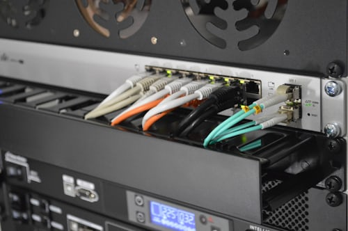

Les rubriques d'Inter TV
Journal Inter TV
L'essentiel de l'actualité locale, nationale et internationale, traité avec rigueur et proximité.

Grand Reportage
Enquêtes et reportages exclusifs sur les faits de société qui marquent le quotidien des Ivoiriens.

Face à Face
Entretiens avec des personnalités, experts et acteurs qui font l'actualité.
Culture & Société
Un regard sur la culture, les initiatives locales et les dynamiques sociales ivoiriennes.

Ambiance Week-end
Musique, loisirs et divertissement pour accompagner vos week-ends en toute légèreté.

Événements en direct
Cérémonies, conférences, tournées et émissions spéciales retransmises en direct.

Tournée Cohésion
Suivi des rencontres sportives et moments de cohésion couverts par nos équipes sur le terrain.
Revue de presse
Un tour d'horizon des titres et sujets qui font l'actualité du jour.
Portraits & Parcours
Des entrepreneurs et figures locales qui inspirent, racontent leur parcours face caméra.
Dernières émissions
 YouTube
YouTubeAbatta se prépare ! La chefferie Tchagba unit les églises pour l'investiture du nouveau chef
 YouTube
YouTubeÉconomie verte et salubrité : Le village d’Abatta mobilisé pour la protection de l’environnement
 YouTube
YouTubeMONO MP4 EN CONCERT LIVE | Rediffusion Officielle sur Inter TV
 YouTube
YouTubeVers l'intronisation du Chef d'Abatta : La Chefferie Tchagba scelle la cohésion spirituelle
 YouTube
YouTubeFlash Info 19h15
 YouTube
YouTubeFlash Info 19h15
Retrouvez chaque émission sur YouTube
Nos programmes, dont le Flash Info de 19h15, sont publiés régulièrement sur notre chaîne. Abonnez-vous et activez la cloche pour être averti de chaque nouvelle vidéo.